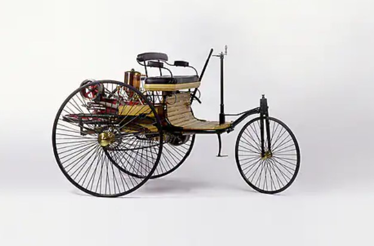
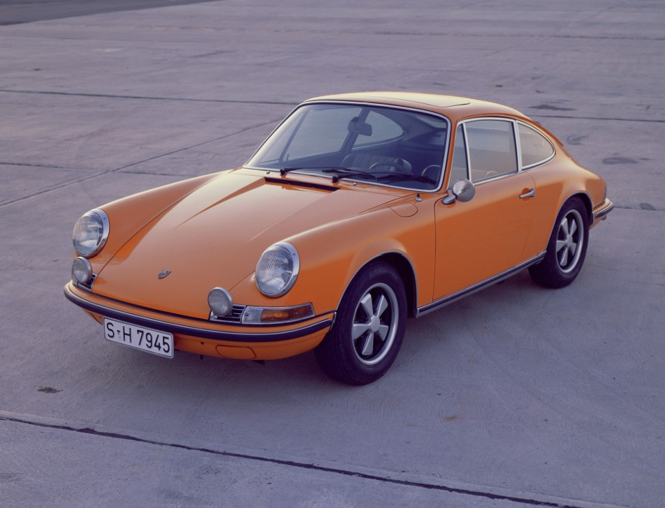
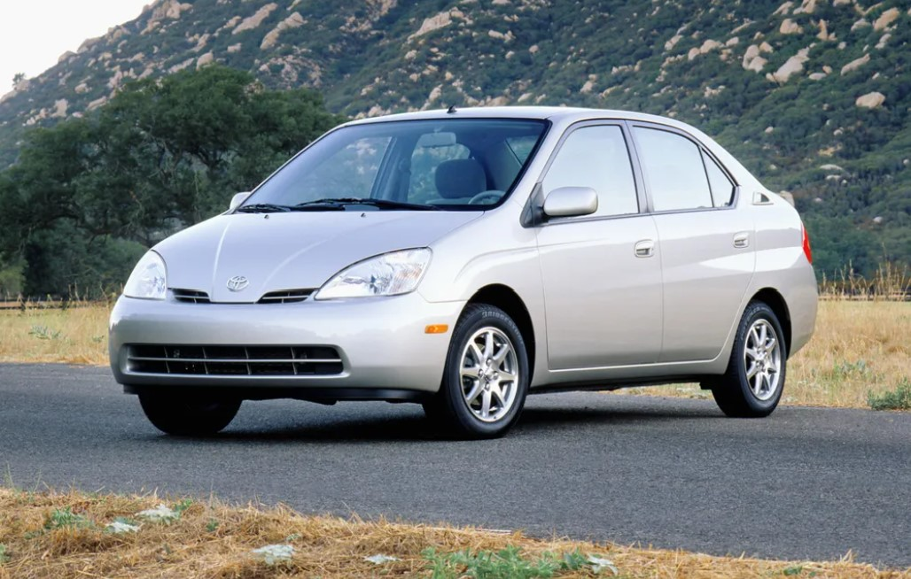
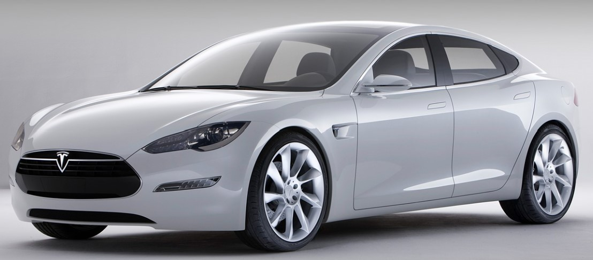

History of Automotives
1886
The automobile is Invented by Carl Benz
The first ever automobile rides on three-wheels. This vehicle's engine has just one cylinder which produces less than one horsepower and allows the vehicle to reach a top speed of 10 MPH.
1900
Porsche Reveals World's First Hybrid Car
Ferdinand Porsche debuts the Lohner-Porsche, which is a hybrid car that uses two small gasoline engines to generate electricity to power its front wheels.
1912
Cadillac Replaces the Engine Crank
The implemntation of the electric starter eliminates the need for drivers to hand-crank cars to start the engines.
1913
Henry Ford's Invents the Assembly Line
Henry Ford implements the first moving automotive assembly line for his Model T. This was a radical concept that trimmed the car's production time from 12.5 hours to 93 minutes. This change in production stategy greatly decreases the cost of automobiles, creates countless job opportunities, and allows for the common man to purchase an automobile. Between 1908 and 1927, Ford built 15 million Model T's, paving the way for the industrial and agricultural America that we know today.

1938
Hitler Launches the Volkswagen Beetle
Although only 600 were made before factories had to switch production to aid in the German war effort, By the late 1950s, the Beetle was a popular hit for motorists around the world.
1940
Willys-Overland Delivers First-Ever Jeep
Willys-Overland Completed its design in a remarkable 75 days in order to provide US infantry with a vehicle they can use for the war. They procude nearly 350,000 Jeeps used in World War 2. However, the people attach themselves to this vehicle design concept, birthing the popular Jeep Wrangler.
1955
Racing Disaster at Le Mans
Racing's deadliest day results in a racing ban across several countries until safety protocals improve. During the 24 hour Le Mans Forumula One Race, French driver Pierre Levegh crashes his Mercedes-Benz 300 SLR. Debrit from the vehicle is projected through the crowd, including a buzzsawing hood. The race still continued to its tragic finish. This distaster took the lives of an additional 83 spectators in addition to the driver's life. A Mercedes vehicle di not race again for more than 30 years.
1963
The Porsche 911 is Born
The world's most iconic sports car is introduced at Frankfurt Motor Show. The distinctive silhouette was such a hit that it was redesigned on 8 seperates occasions. Since it's introductin back in 1963, more than 1 million 911's have been produced.
1964
America joins in with the Ford Mustang
Henry Ford finally successfully designs an affordable answer to European sports cars. the Mustang is a massive hit as Ford receives 22,000 orders on its first day, and sells 1 million units within 2 years.
1981
McLaren Carbon-Fiber Racecar Dominates Formula One
The McLaren MP4/1 completely rattles the Formula One world with its lightweight, ultra-strong carbon-fiber chassis. This causes a complete shift in the approach of producing race cars as carbon fiber becomes a critical component for high-end racing and supercar manufacturing.
1997
New Standard Set by Fuel-Efficient Toyota Prius
The stripped down fuel-saving Toyota is a huge hit and causes rival automakers to create their own gas-electric hybrids.
2005
Bugatti Veyron Becomes World's Fastest Production Car
The group owned by Volkswagen, produces the Bugatti Veyron 16.4, which instantly shocks the world. The supercar boasts an incredible 987-horsepower with it's four-turbo, 16-cylinder engine. The retail comes in at $1.9 million and reaches an improbable 249 MPH top speed.
2012
Electric Tesla Model S Raises Questions about the Future of Automotives
Elon Musk's heavily reengineers the Lotus Elise to create the elecetric Tesla Roadster. However, it's his Model S sedan that changed the scope of the automotive world. It sports a slinky shape, unprecedented acceleration, and revolutionary technology. Global automakers recognize this threat and begin tearing down product plans after realizing that electric cars are the future.
Featured Cars
1936 Bugatti Type 57 SC Atlantic

Many consider this the first supercar ever built, with a maximum speed of 123 MPH. Only 4 of these cars were ever created and 3 of those cars are still in existence, with the 4th being missing for over 80 years. The Bugatti Type 57 SC Atlantic is regarded as the most valuable car in the world.
1961 Ferrari 250 GTO

This Ferrari was designed to be a racecar that also met regulations in order to be classified street legal. The first prototype was raced in the Daytona Continental and took 4th place in 1962. A total of 39 models were manufactured by Ferrari.
1970 Dodge Charger RT

The 1970 Dodge Charger RT is a classic car that is popular among TV shows and movies. The list of cinematography in which the Charger makes an appearance includes but is not limited to Dirty Mary Crazy Larry, The Fast and the Furious, and Dukes of Hazzard. The base price back in 1970 was only $3,700. The car boasted 350 base horsepower from a 440 cubic-inch Magnum V-8.
1976 Chevrolet Corvette Stingray

The 1976 Chevrolet Corvette Stingray may be the most classic Corvette ever produced. There were a little over 46,000 units produced with a starting price of $7,604.85. The 1976 Corvette featured various minor exterior edits in comparison to the prior year's model. Updates that included the re-introduction of the aluminum wheels, removing the air-extractor vents from the rear deck, removing the cowl flap from the hood, and introducing two different styles of rear bumper.
2012 Bugatti Veyron 16.4 Grand Sport

This is the world's fastest production convertible. This car is stocked with a quad turbocharged and intercooled DOHC 64-valve W-16 engine. It can reach a top speed of over 248 MPH and 0-60 in less than three seconds. It also sports an extremely luxurious interior. I had the opportunity to see one parked on the street in Beverly Hills.
1987 Ferrari F40

This is a mid-engine rear-wheel drive Ferrari that was designed as a celebration of 40 years of Ferrari. The Ferrari F40 was the last Ferrari vehicle that was personally approved by Enzo Ferrari. With this approval came a car that was the fastest, most powerful, and most expensive vehicle for sale when it was produced. There were 1,311 Ferrari F40 models produced with less than 250 of those being shipped to the United States. The original price of the F40 was $399,150, however, on average, purchasing one of these vehicles today will run its purchaser $1.5 million. This model was regarded as the first 200 MPH production car, the F40 rocked a 2.9L twin-turbo V8 engine, generating 471 hp and 426 lb-ft of torque.
1964 Ford GT40

The second oldest Ford GT40 was most recently sold at auction for s hefty 7 million. The whole reason this car was created was the purpose of dethroning Ferrari from dominating endurance racing in Europe. This car came equipped with a top speed just shy of 200 MPH. This automobile supported a mid-engine design with rear wheel drive. There were only 111 Ford GT40's ever produced.
1997 McLaren F1 GT

The McLaren F1 GT features a mid V-12 engine and a carbon fiber chassis frame. The driver seat is also mounted in the center of the vehicle. It was the world's fastest production car for 12 consecutive years, topping out at 240.1 MPH. McLaren only built three of the F1 GT in 1997. In comparison to the previous model, this version included a much longer nose and rear sections, wider fenders, a spoiler integrated into the rear fascia, and a bigger wing. The upgrades increased downforce and reduced drag, making the F1 faster than it's ancestors. One of the GT's sold for over 1 million dollars back in the 90's.
2011 Pagani Huayra

This is personally, my favorite supercar to exist. I believe it's aesthetic is second to none. This supercar uses a Mercedes-sourced V12 engine and takes advantage of Pagani's in-house carbon fiber expertise. This car was named after the god of wind, Aymara Huayra Tata. The Pagani Huayra is a coupé with 2 doors and a mid-mounted engine which transmits its power through the rear wheels.
1967 Shelby Cobra 427

In additional to the competition cars, 260 of these units were produced as street-legal variants. One of these vehicles could go from zero to 60 mph in about 4.3 seconds, and to 100 mph in 8.8 seconds. The most a single buyer has paid for one of these cars is $13,750,000. The high-performance race car components of the car lead made the street-legal version of the car very hard to control.